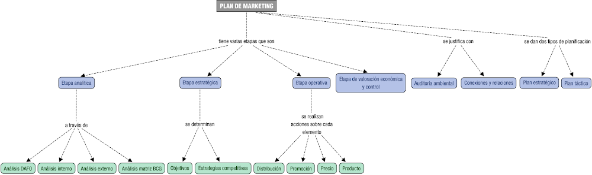

Presentación
Vamos a realizar un Plan de Marketing para una empresa farmacéutica . Para ello vamos a tener en cuenta las fases que iremos viendo que se corresponden con los contenidos del UT 5 El Plan de marketing:
- Análisis de la situación de partida(quienes somos, nuestro público, etc.)
- Análisis interno y externo y resultado DAFO.
- Público objetivo.
- Objetivos marcados.
- Estrategias de marketing 4P.
- Estrategias de actuación.
- Recursos necesarios.
- Seguimiento y control.
A continuación se adjunta un mapa conceptual de los contenidos:
